542 images, 70 views. Each row: one view, oldest left.
S_ground_tq/fade_mid 13 versions
2026-09-29 02d0101 Ground plane v1 GP2+GP3: ground mix per tile + procedural detail sets in M_Terrain
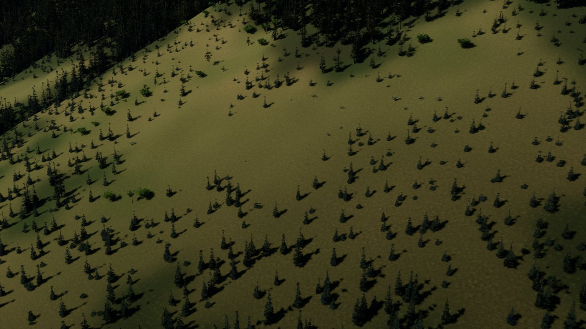
2026-09-29 dbd98ee Ground rock set: separate rounded stones with fines and pebbles in the gaps (was cracked-m2026-09-29 289049d Ground plane v1 GP4: near-camera ground cover (grass, ferns, shrubs, rocks, logs, stumps)2026-09-29 8b76ede Ground cover: cells rebuild until every sample comes from the finest LOD (placement no lon2026-09-29 7769d8b Ground: cliff projection switch, cover on the rendered surface, smooth rocks (Brad's revie2026-09-30 74aab53 Streaming: async terrain / trees / cover, one terrain component per tile - hitching fixed2026-09-30 a2e58ce Exposure: histogram auto exposure by default (EV100 0.5-10, bias -1.3), per-view floor, go
2026-09-30 b79d44f 8h+ steps 3-5: ground volume, hung-up trees anchored on real trees, burned-area mosaic
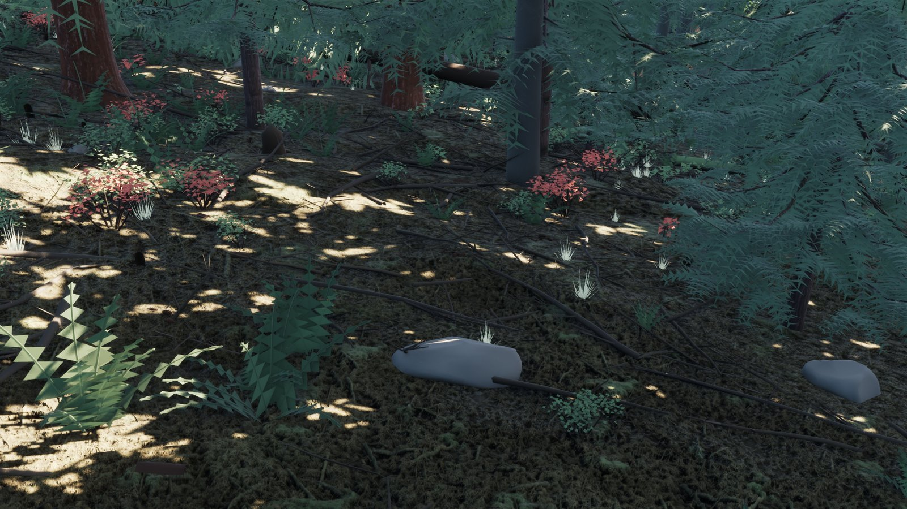
2026-10-01 ba85877 regress --full
S_ground_tq/rock 13 versions
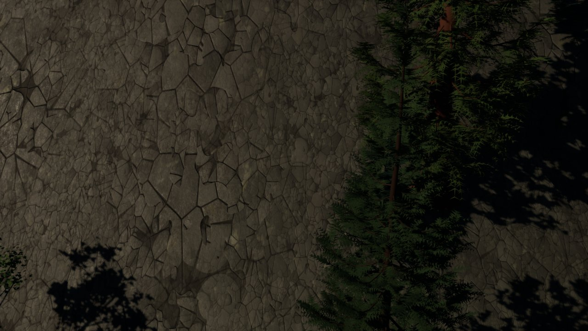
2026-09-29 02d0101 Ground plane v1 GP2+GP3: ground mix per tile + procedural detail sets in M_Terrain
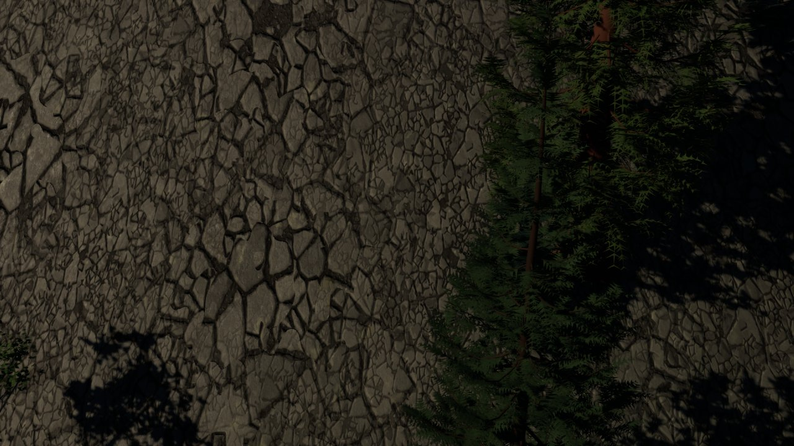
2026-09-29 dbd98ee Ground rock set: separate rounded stones with fines and pebbles in the gaps (was cracked-m2026-09-29 289049d Ground plane v1 GP4: near-camera ground cover (grass, ferns, shrubs, rocks, logs, stumps)
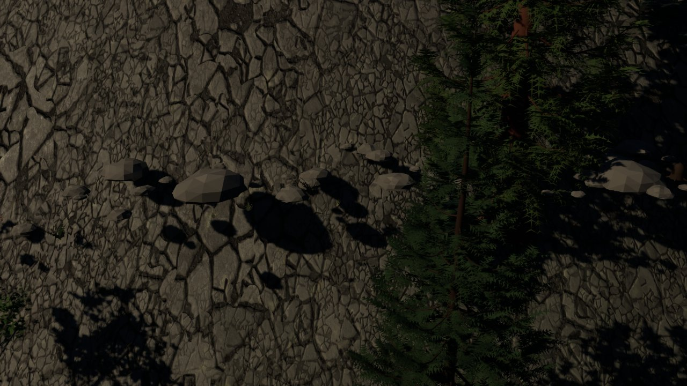
2026-09-29 8b76ede Ground cover: cells rebuild until every sample comes from the finest LOD (placement no lon
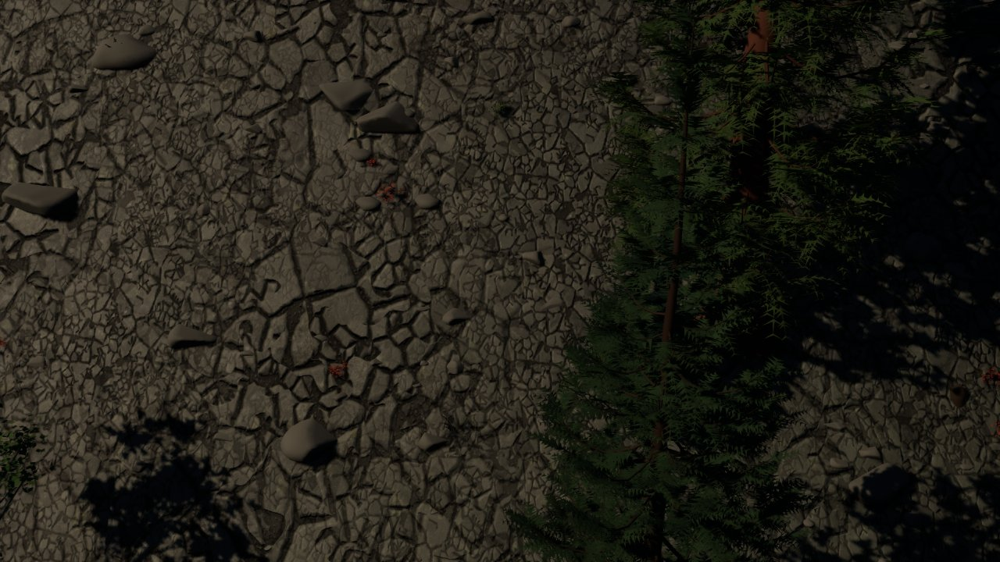
2026-09-29 7769d8b Ground: cliff projection switch, cover on the rendered surface, smooth rocks (Brad's revie
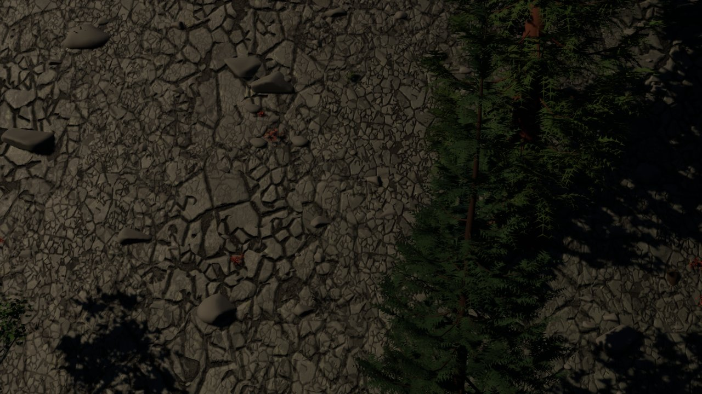
2026-09-30 74aab53 Streaming: async terrain / trees / cover, one terrain component per tile - hitching fixed
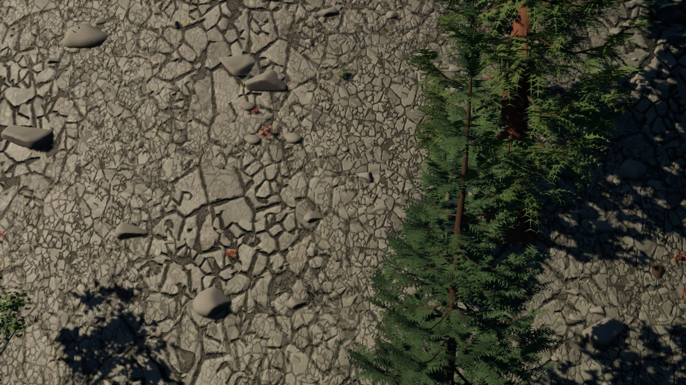
2026-09-30 a2e58ce Exposure: histogram auto exposure by default (EV100 0.5-10, bias -1.3), per-view floor, go
2026-09-30 7ea639f Play client: readable help block (H), fire date / local time + day since fire start, lamp 2026-09-30 28a0b83 8g items 4-6: haze, terrain geomorph, far-field canopy impression
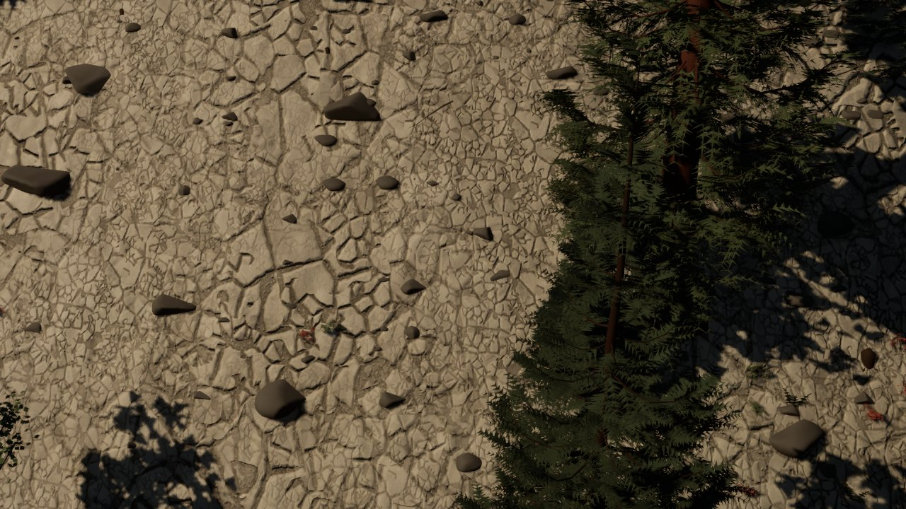
2026-09-30 b79d44f 8h+ steps 3-5: ground volume, hung-up trees anchored on real trees, burned-area mosaic
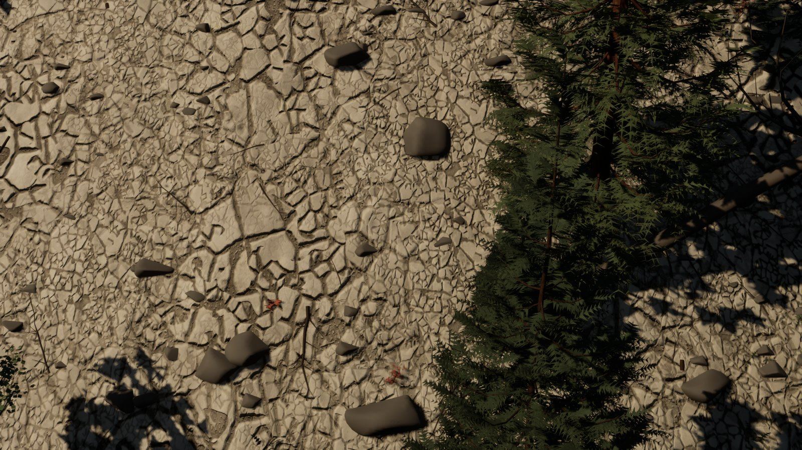
2026-10-01 ba85877 regress --full
S_ground_tq/shrub 13 versions
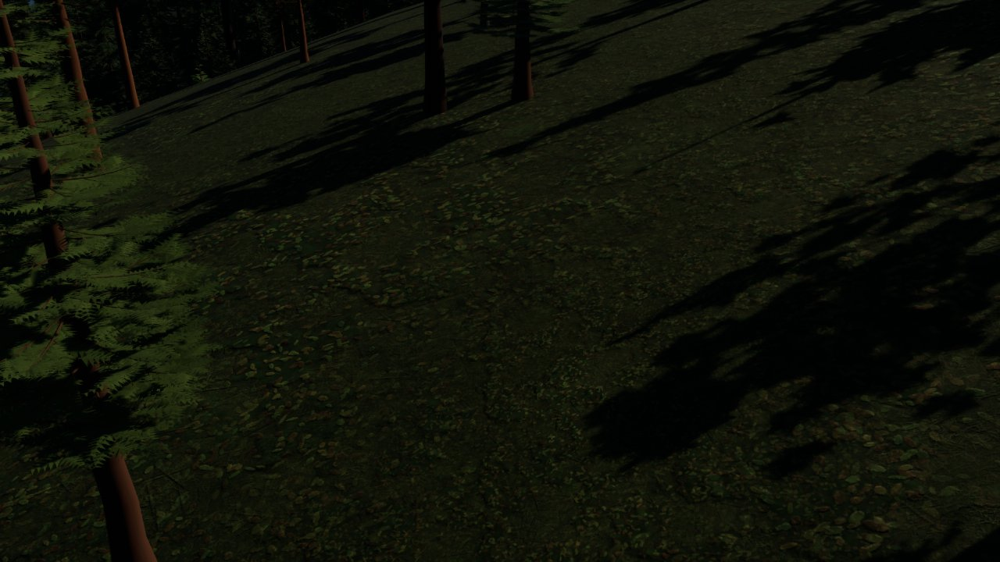
2026-09-29 02d0101 Ground plane v1 GP2+GP3: ground mix per tile + procedural detail sets in M_Terrain
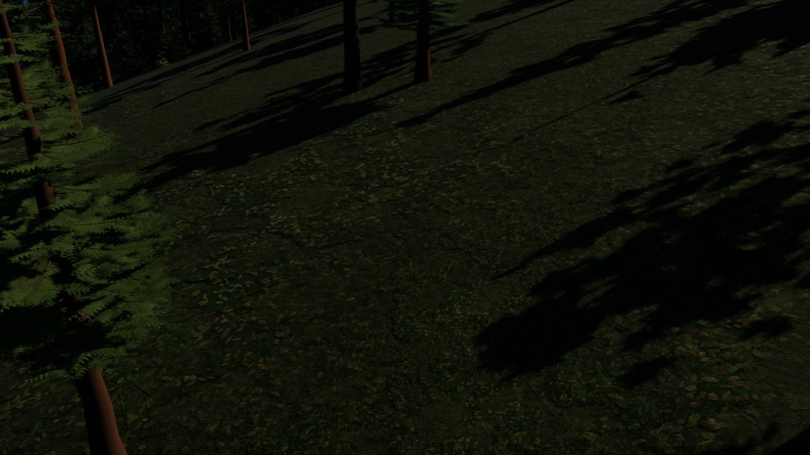
2026-09-29 dbd98ee Ground rock set: separate rounded stones with fines and pebbles in the gaps (was cracked-m
2026-09-29 8b76ede Ground cover: cells rebuild until every sample comes from the finest LOD (placement no lon2026-09-29 7769d8b Ground: cliff projection switch, cover on the rendered surface, smooth rocks (Brad's revie
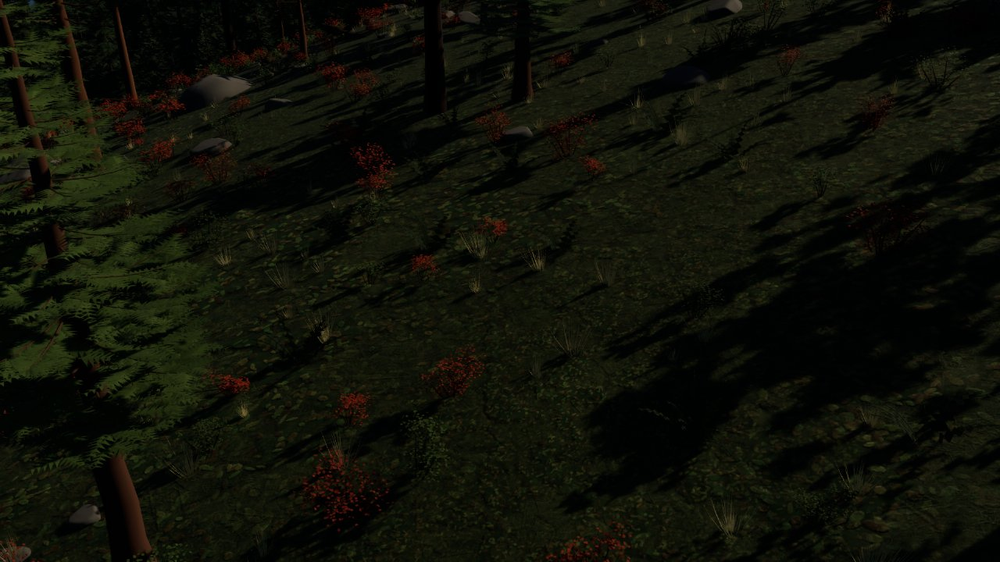
2026-09-30 74aab53 Streaming: async terrain / trees / cover, one terrain component per tile - hitching fixed
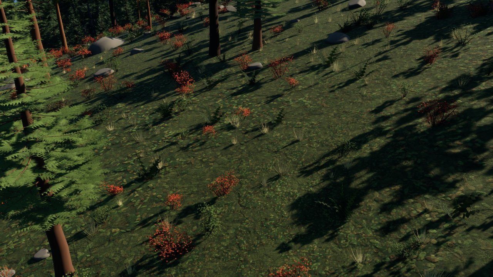
2026-09-30 a2e58ce Exposure: histogram auto exposure by default (EV100 0.5-10, bias -1.3), per-view floor, go
2026-09-30 7ea639f Play client: readable help block (H), fire date / local time + day since fire start, lamp 2026-09-30 28a0b83 8g items 4-6: haze, terrain geomorph, far-field canopy impression
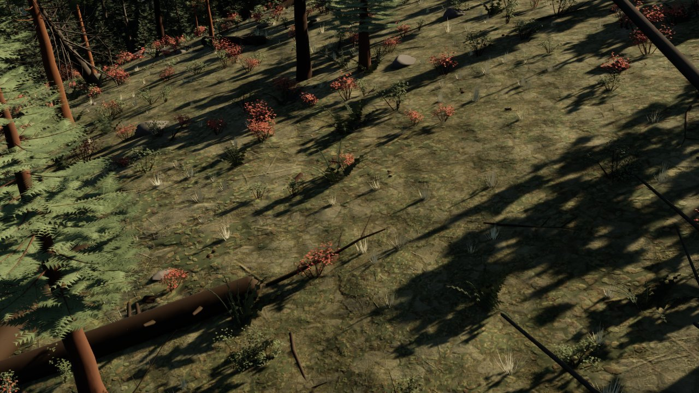
2026-09-30 b79d44f 8h+ steps 3-5: ground volume, hung-up trees anchored on real trees, burned-area mosaic
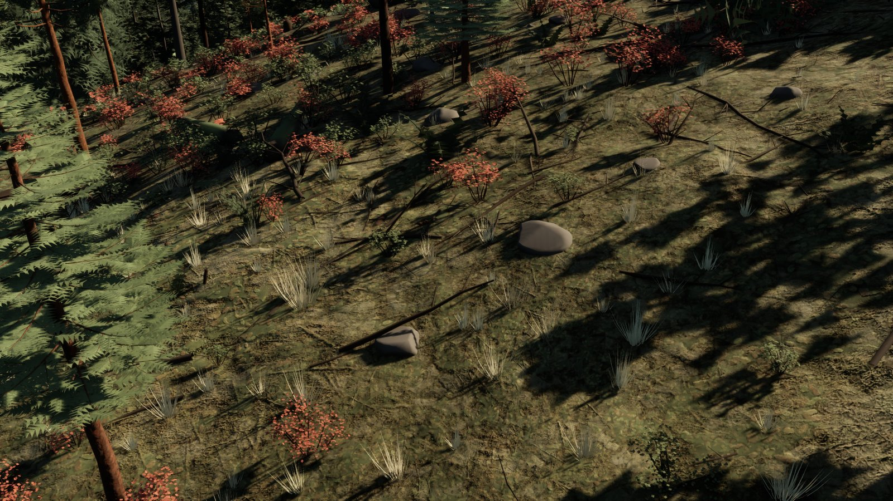
2026-10-01 ba85877 regress --full
S_forest_teanaway/ground_ridge 12 versions
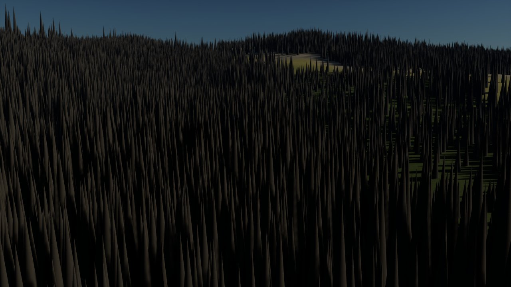
2026-09-27 fdab1a9 Epic 5 Phase 1 C4 (render): Terrain-conformant vegetation instanced in UE2026-09-27 cd7fa51 Epic 5 Phase 1 B3 v1: generated species meshes (Nanite) + M_Veg; vegetation uses them2026-09-28 e3b3222 Epic 5 HCP2 bundle: Three Queens forest (1.45 M trees) - flyover, sway orbit, lineup, fore2026-09-28 f210d8c Epic 5 HCP2 round 2: vegetation tiers (near/mid cells, lite meshes), Nanite foliage settin2026-09-29 455c337 Goldens re-blessed for U11+U12 (CHM height above ground, cell gridding, per-tree ground)2026-09-29 03c878e Goldens re-blessed for ground plane v1 (Brad signed off the checkpoint, 2026-09-29)2026-09-30 a2e58ce Exposure: histogram auto exposure by default (EV100 0.5-10, bias -1.3), per-view floor, go2026-09-30 474abbc 8g logs, snags, hung-up trees: cover poses (conform / leaner), snag + pole meshes; goldens2026-09-30 2ab3134 Ground v2 (8g "basketball court"): litter shader + sky occlusion under canopy; S_jolly_pla2026-09-30 28a0b83 8g items 4-6: haze, terrain geomorph, far-field canopy impression2026-09-30 b79d44f 8h+ steps 3-5: ground volume, hung-up trees anchored on real trees, burned-area mosaic2026-10-01 ba85877 regress --full
S_forest_teanaway/oblique_nw 12 versions
2026-09-27 fdab1a9 Epic 5 Phase 1 C4 (render): Terrain-conformant vegetation instanced in UE2026-09-27 cd7fa51 Epic 5 Phase 1 B3 v1: generated species meshes (Nanite) + M_Veg; vegetation uses them2026-09-28 e3b3222 Epic 5 HCP2 bundle: Three Queens forest (1.45 M trees) - flyover, sway orbit, lineup, fore2026-09-28 f210d8c Epic 5 HCP2 round 2: vegetation tiers (near/mid cells, lite meshes), Nanite foliage settin2026-09-29 455c337 Goldens re-blessed for U11+U12 (CHM height above ground, cell gridding, per-tree ground)2026-09-29 03c878e Goldens re-blessed for ground plane v1 (Brad signed off the checkpoint, 2026-09-29)2026-09-30 a2e58ce Exposure: histogram auto exposure by default (EV100 0.5-10, bias -1.3), per-view floor, go2026-09-30 474abbc 8g logs, snags, hung-up trees: cover poses (conform / leaner), snag + pole meshes; goldens2026-09-30 2ab3134 Ground v2 (8g "basketball court"): litter shader + sky occlusion under canopy; S_jolly_pla2026-09-30 28a0b83 8g items 4-6: haze, terrain geomorph, far-field canopy impression2026-09-30 b79d44f 8h+ steps 3-5: ground volume, hung-up trees anchored on real trees, burned-area mosaic2026-10-01 ba85877 regress --full
S_ground_fire_tq/front 12 versions
2026-09-29 98bc578 Ground plane v1 GP5: fire on the ground at eye level2026-09-29 8b76ede Ground cover: cells rebuild until every sample comes from the finest LOD (placement no lon2026-09-29 7769d8b Ground: cliff projection switch, cover on the rendered surface, smooth rocks (Brad's revie2026-09-30 74aab53 Streaming: async terrain / trees / cover, one terrain component per tile - hitching fixed2026-09-30 3adc713 HCP4 start: intensity classes, wind from the replay, S_jolly_hcp4 on the CA model run2026-09-30 a2e58ce Exposure: histogram auto exposure by default (EV100 0.5-10, bias -1.3), per-view floor, go2026-09-30 66ba17a HCP4 H4-5 first pass: eye-level flame cards, torching tongues, contour rings fixed2026-09-30 474abbc 8g logs, snags, hung-up trees: cover poses (conform / leaner), snag + pole meshes; goldens2026-09-30 2ab3134 Ground v2 (8g "basketball court"): litter shader + sky occlusion under canopy; S_jolly_pla2026-09-30 28a0b83 8g items 4-6: haze, terrain geomorph, far-field canopy impression2026-09-30 b79d44f 8h+ steps 3-5: ground volume, hung-up trees anchored on real trees, burned-area mosaic2026-10-01 ba85877 regress --full
S_ground_fire_tq/old_burn 12 versions
2026-09-29 98bc578 Ground plane v1 GP5: fire on the ground at eye level2026-09-29 8b76ede Ground cover: cells rebuild until every sample comes from the finest LOD (placement no lon2026-09-29 7769d8b Ground: cliff projection switch, cover on the rendered surface, smooth rocks (Brad's revie2026-09-30 74aab53 Streaming: async terrain / trees / cover, one terrain component per tile - hitching fixed2026-09-30 3adc713 HCP4 start: intensity classes, wind from the replay, S_jolly_hcp4 on the CA model run2026-09-30 a2e58ce Exposure: histogram auto exposure by default (EV100 0.5-10, bias -1.3), per-view floor, go2026-09-30 66ba17a HCP4 H4-5 first pass: eye-level flame cards, torching tongues, contour rings fixed2026-09-30 474abbc 8g logs, snags, hung-up trees: cover poses (conform / leaner), snag + pole meshes; goldens2026-09-30 2ab3134 Ground v2 (8g "basketball court"): litter shader + sky occlusion under canopy; S_jolly_pla2026-09-30 28a0b83 8g items 4-6: haze, terrain geomorph, far-field canopy impression2026-09-30 b79d44f 8h+ steps 3-5: ground volume, hung-up trees anchored on real trees, burned-area mosaic2026-10-01 ba85877 regress --full
S_jolly_fire/run_close_d19 12 versions
2026-09-28 ba86f07 Epic 5 HCP3 bundle: Jolly Mountain 2017 in 3D - timelapse, 2D|3D split, scar stills, verdi2026-09-28 8d3fbc7 HCP3: ground-level baseline stills (behind/ahead of the day-19 head, ridge lookout, next-m2026-09-29 03c878e Goldens re-blessed for ground plane v1 (Brad signed off the checkpoint, 2026-09-29)2026-09-30 74aab53 Streaming: async terrain / trees / cover, one terrain component per tile - hitching fixed2026-09-30 3adc713 HCP4 start: intensity classes, wind from the replay, S_jolly_hcp4 on the CA model run2026-09-30 a2e58ce Exposure: histogram auto exposure by default (EV100 0.5-10, bias -1.3), per-view floor, go2026-09-30 66ba17a HCP4 H4-5 first pass: eye-level flame cards, torching tongues, contour rings fixed2026-09-30 474abbc 8g logs, snags, hung-up trees: cover poses (conform / leaner), snag + pole meshes; goldens2026-09-30 2ab3134 Ground v2 (8g "basketball court"): litter shader + sky occlusion under canopy; S_jolly_pla2026-09-30 28a0b83 8g items 4-6: haze, terrain geomorph, far-field canopy impression2026-09-30 b79d44f 8h+ steps 3-5: ground volume, hung-up trees anchored on real trees, burned-area mosaic2026-10-01 ba85877 regress --full
S_jolly_fire/run_mid_d19 12 versions
2026-09-28 ba86f07 Epic 5 HCP3 bundle: Jolly Mountain 2017 in 3D - timelapse, 2D|3D split, scar stills, verdi2026-09-28 8d3fbc7 HCP3: ground-level baseline stills (behind/ahead of the day-19 head, ridge lookout, next-m2026-09-29 03c878e Goldens re-blessed for ground plane v1 (Brad signed off the checkpoint, 2026-09-29)2026-09-30 74aab53 Streaming: async terrain / trees / cover, one terrain component per tile - hitching fixed2026-09-30 3adc713 HCP4 start: intensity classes, wind from the replay, S_jolly_hcp4 on the CA model run2026-09-30 a2e58ce Exposure: histogram auto exposure by default (EV100 0.5-10, bias -1.3), per-view floor, go2026-09-30 66ba17a HCP4 H4-5 first pass: eye-level flame cards, torching tongues, contour rings fixed2026-09-30 474abbc 8g logs, snags, hung-up trees: cover poses (conform / leaner), snag + pole meshes; goldens2026-09-30 2ab3134 Ground v2 (8g "basketball court"): litter shader + sky occlusion under canopy; S_jolly_pla2026-09-30 28a0b83 8g items 4-6: haze, terrain geomorph, far-field canopy impression2026-09-30 b79d44f 8h+ steps 3-5: ground volume, hung-up trees anchored on real trees, burned-area mosaic2026-10-01 ba85877 regress --full
S_ground_fire_tq/smoulder 11 versions
2026-09-29 98bc578 Ground plane v1 GP5: fire on the ground at eye level2026-09-29 8b76ede Ground cover: cells rebuild until every sample comes from the finest LOD (placement no lon2026-09-29 7769d8b Ground: cliff projection switch, cover on the rendered surface, smooth rocks (Brad's revie2026-09-30 74aab53 Streaming: async terrain / trees / cover, one terrain component per tile - hitching fixed2026-09-30 3adc713 HCP4 start: intensity classes, wind from the replay, S_jolly_hcp4 on the CA model run2026-09-30 a2e58ce Exposure: histogram auto exposure by default (EV100 0.5-10, bias -1.3), per-view floor, go2026-09-30 66ba17a HCP4 H4-5 first pass: eye-level flame cards, torching tongues, contour rings fixed2026-09-30 474abbc 8g logs, snags, hung-up trees: cover poses (conform / leaner), snag + pole meshes; goldens2026-09-30 2ab3134 Ground v2 (8g "basketball court"): litter shader + sky occlusion under canopy; S_jolly_pla2026-09-30 28a0b83 8g items 4-6: haze, terrain geomorph, far-field canopy impression2026-09-30 b79d44f 8h+ steps 3-5: ground volume, hung-up trees anchored on real trees, burned-area mosaic
S_jolly_fire/ground_ahead_d19 11 versions
2026-09-28 8d3fbc7 HCP3: ground-level baseline stills (behind/ahead of the day-19 head, ridge lookout, next-m2026-09-29 03c878e Goldens re-blessed for ground plane v1 (Brad signed off the checkpoint, 2026-09-29)2026-09-30 74aab53 Streaming: async terrain / trees / cover, one terrain component per tile - hitching fixed2026-09-30 3adc713 HCP4 start: intensity classes, wind from the replay, S_jolly_hcp4 on the CA model run2026-09-30 a2e58ce Exposure: histogram auto exposure by default (EV100 0.5-10, bias -1.3), per-view floor, go2026-09-30 66ba17a HCP4 H4-5 first pass: eye-level flame cards, torching tongues, contour rings fixed2026-09-30 474abbc 8g logs, snags, hung-up trees: cover poses (conform / leaner), snag + pole meshes; goldens2026-09-30 2ab3134 Ground v2 (8g "basketball court"): litter shader + sky occlusion under canopy; S_jolly_pla2026-09-30 28a0b83 8g items 4-6: haze, terrain geomorph, far-field canopy impression2026-09-30 b79d44f 8h+ steps 3-5: ground volume, hung-up trees anchored on real trees, burned-area mosaic2026-10-01 ba85877 regress --full
S_jolly_fire/ground_behind_d19 11 versions
2026-09-28 8d3fbc7 HCP3: ground-level baseline stills (behind/ahead of the day-19 head, ridge lookout, next-m2026-09-29 03c878e Goldens re-blessed for ground plane v1 (Brad signed off the checkpoint, 2026-09-29)2026-09-30 74aab53 Streaming: async terrain / trees / cover, one terrain component per tile - hitching fixed2026-09-30 3adc713 HCP4 start: intensity classes, wind from the replay, S_jolly_hcp4 on the CA model run2026-09-30 a2e58ce Exposure: histogram auto exposure by default (EV100 0.5-10, bias -1.3), per-view floor, go2026-09-30 66ba17a HCP4 H4-5 first pass: eye-level flame cards, torching tongues, contour rings fixed2026-09-30 474abbc 8g logs, snags, hung-up trees: cover poses (conform / leaner), snag + pole meshes; goldens2026-09-30 2ab3134 Ground v2 (8g "basketball court"): litter shader + sky occlusion under canopy; S_jolly_pla2026-09-30 28a0b83 8g items 4-6: haze, terrain geomorph, far-field canopy impression2026-09-30 b79d44f 8h+ steps 3-5: ground volume, hung-up trees anchored on real trees, burned-area mosaic2026-10-01 ba85877 regress --full
S_jolly_fire/ridge_lookout_d19 11 versions
2026-09-28 8d3fbc7 HCP3: ground-level baseline stills (behind/ahead of the day-19 head, ridge lookout, next-m2026-09-29 03c878e Goldens re-blessed for ground plane v1 (Brad signed off the checkpoint, 2026-09-29)2026-09-30 74aab53 Streaming: async terrain / trees / cover, one terrain component per tile - hitching fixed2026-09-30 3adc713 HCP4 start: intensity classes, wind from the replay, S_jolly_hcp4 on the CA model run2026-09-30 a2e58ce Exposure: histogram auto exposure by default (EV100 0.5-10, bias -1.3), per-view floor, go2026-09-30 66ba17a HCP4 H4-5 first pass: eye-level flame cards, torching tongues, contour rings fixed2026-09-30 474abbc 8g logs, snags, hung-up trees: cover poses (conform / leaner), snag + pole meshes; goldens2026-09-30 2ab3134 Ground v2 (8g "basketball court"): litter shader + sky occlusion under canopy; S_jolly_pla2026-09-30 28a0b83 8g items 4-6: haze, terrain geomorph, far-field canopy impression2026-09-30 b79d44f 8h+ steps 3-5: ground volume, hung-up trees anchored on real trees, burned-area mosaic2026-10-01 ba85877 regress --full
S_jolly_fire/scar_morning_d20 11 versions
2026-09-28 8d3fbc7 HCP3: ground-level baseline stills (behind/ahead of the day-19 head, ridge lookout, next-m2026-09-29 03c878e Goldens re-blessed for ground plane v1 (Brad signed off the checkpoint, 2026-09-29)2026-09-30 74aab53 Streaming: async terrain / trees / cover, one terrain component per tile - hitching fixed2026-09-30 3adc713 HCP4 start: intensity classes, wind from the replay, S_jolly_hcp4 on the CA model run2026-09-30 a2e58ce Exposure: histogram auto exposure by default (EV100 0.5-10, bias -1.3), per-view floor, go2026-09-30 66ba17a HCP4 H4-5 first pass: eye-level flame cards, torching tongues, contour rings fixed2026-09-30 474abbc 8g logs, snags, hung-up trees: cover poses (conform / leaner), snag + pole meshes; goldens2026-09-30 2ab3134 Ground v2 (8g "basketball court"): litter shader + sky occlusion under canopy; S_jolly_pla2026-09-30 28a0b83 8g items 4-6: haze, terrain geomorph, far-field canopy impression2026-09-30 b79d44f 8h+ steps 3-5: ground volume, hung-up trees anchored on real trees, burned-area mosaic2026-10-01 ba85877 regress --full
S_tq_fire_synth/t12h 11 versions
2026-09-28 28d75e1 Epic 5 Phase 2 (HCP3) D1/D2: fire state rendering - fire actor, charred/burning terrain an2026-09-28 ba86f07 Epic 5 HCP3 bundle: Jolly Mountain 2017 in 3D - timelapse, 2D|3D split, scar stills, verdi2026-09-29 455c337 Goldens re-blessed for U11+U12 (CHM height above ground, cell gridding, per-tree ground)2026-09-30 3adc713 HCP4 start: intensity classes, wind from the replay, S_jolly_hcp4 on the CA model run2026-09-30 a2e58ce Exposure: histogram auto exposure by default (EV100 0.5-10, bias -1.3), per-view floor, go2026-09-30 66ba17a HCP4 H4-5 first pass: eye-level flame cards, torching tongues, contour rings fixed2026-09-30 474abbc 8g logs, snags, hung-up trees: cover poses (conform / leaner), snag + pole meshes; goldens2026-09-30 2ab3134 Ground v2 (8g "basketball court"): litter shader + sky occlusion under canopy; S_jolly_pla2026-09-30 28a0b83 8g items 4-6: haze, terrain geomorph, far-field canopy impression2026-09-30 b79d44f 8h+ steps 3-5: ground volume, hung-up trees anchored on real trees, burned-area mosaic2026-10-01 ba85877 regress --full
S_tq_fire_synth/t24h_front 11 versions
2026-09-28 28d75e1 Epic 5 Phase 2 (HCP3) D1/D2: fire state rendering - fire actor, charred/burning terrain an2026-09-28 ba86f07 Epic 5 HCP3 bundle: Jolly Mountain 2017 in 3D - timelapse, 2D|3D split, scar stills, verdi2026-09-29 455c337 Goldens re-blessed for U11+U12 (CHM height above ground, cell gridding, per-tree ground)2026-09-30 3adc713 HCP4 start: intensity classes, wind from the replay, S_jolly_hcp4 on the CA model run2026-09-30 a2e58ce Exposure: histogram auto exposure by default (EV100 0.5-10, bias -1.3), per-view floor, go2026-09-30 66ba17a HCP4 H4-5 first pass: eye-level flame cards, torching tongues, contour rings fixed2026-09-30 474abbc 8g logs, snags, hung-up trees: cover poses (conform / leaner), snag + pole meshes; goldens2026-09-30 2ab3134 Ground v2 (8g "basketball court"): litter shader + sky occlusion under canopy; S_jolly_pla2026-09-30 28a0b83 8g items 4-6: haze, terrain geomorph, far-field canopy impression2026-09-30 b79d44f 8h+ steps 3-5: ground volume, hung-up trees anchored on real trees, burned-area mosaic2026-10-01 ba85877 regress --full
S_tq_fire_synth/t48h 11 versions
2026-09-28 28d75e1 Epic 5 Phase 2 (HCP3) D1/D2: fire state rendering - fire actor, charred/burning terrain an2026-09-28 ba86f07 Epic 5 HCP3 bundle: Jolly Mountain 2017 in 3D - timelapse, 2D|3D split, scar stills, verdi2026-09-29 455c337 Goldens re-blessed for U11+U12 (CHM height above ground, cell gridding, per-tree ground)2026-09-30 3adc713 HCP4 start: intensity classes, wind from the replay, S_jolly_hcp4 on the CA model run2026-09-30 a2e58ce Exposure: histogram auto exposure by default (EV100 0.5-10, bias -1.3), per-view floor, go2026-09-30 66ba17a HCP4 H4-5 first pass: eye-level flame cards, torching tongues, contour rings fixed2026-09-30 474abbc 8g logs, snags, hung-up trees: cover poses (conform / leaner), snag + pole meshes; goldens2026-09-30 2ab3134 Ground v2 (8g "basketball court"): litter shader + sky occlusion under canopy; S_jolly_pla2026-09-30 28a0b83 8g items 4-6: haze, terrain geomorph, far-field canopy impression2026-09-30 b79d44f 8h+ steps 3-5: ground volume, hung-up trees anchored on real trees, burned-area mosaic2026-10-01 ba85877 regress --full
S_tq_forest/forest_oblique 11 versions
2026-09-28 e3b3222 Epic 5 HCP2 bundle: Three Queens forest (1.45 M trees) - flyover, sway orbit, lineup, fore2026-09-28 f210d8c Epic 5 HCP2 round 2: vegetation tiers (near/mid cells, lite meshes), Nanite foliage settin2026-09-29 455c337 Goldens re-blessed for U11+U12 (CHM height above ground, cell gridding, per-tree ground)2026-09-29 03c878e Goldens re-blessed for ground plane v1 (Brad signed off the checkpoint, 2026-09-29)2026-09-30 74aab53 Streaming: async terrain / trees / cover, one terrain component per tile - hitching fixed2026-09-30 a2e58ce Exposure: histogram auto exposure by default (EV100 0.5-10, bias -1.3), per-view floor, go2026-09-30 474abbc 8g logs, snags, hung-up trees: cover poses (conform / leaner), snag + pole meshes; goldens2026-09-30 2ab3134 Ground v2 (8g "basketball court"): litter shader + sky occlusion under canopy; S_jolly_pla2026-09-30 28a0b83 8g items 4-6: haze, terrain geomorph, far-field canopy impression2026-09-30 b79d44f 8h+ steps 3-5: ground volume, hung-up trees anchored on real trees, burned-area mosaic2026-10-01 ba85877 regress --full
S_tq_forest/ground_forest 11 versions
2026-09-28 e3b3222 Epic 5 HCP2 bundle: Three Queens forest (1.45 M trees) - flyover, sway orbit, lineup, fore2026-09-28 f210d8c Epic 5 HCP2 round 2: vegetation tiers (near/mid cells, lite meshes), Nanite foliage settin2026-09-29 455c337 Goldens re-blessed for U11+U12 (CHM height above ground, cell gridding, per-tree ground)2026-09-29 03c878e Goldens re-blessed for ground plane v1 (Brad signed off the checkpoint, 2026-09-29)2026-09-30 74aab53 Streaming: async terrain / trees / cover, one terrain component per tile - hitching fixed2026-09-30 a2e58ce Exposure: histogram auto exposure by default (EV100 0.5-10, bias -1.3), per-view floor, go2026-09-30 474abbc 8g logs, snags, hung-up trees: cover poses (conform / leaner), snag + pole meshes; goldens2026-09-30 2ab3134 Ground v2 (8g "basketball court"): litter shader + sky occlusion under canopy; S_jolly_pla2026-09-30 28a0b83 8g items 4-6: haze, terrain geomorph, far-field canopy impression2026-09-30 b79d44f 8h+ steps 3-5: ground volume, hung-up trees anchored on real trees, burned-area mosaic2026-10-01 ba85877 regress --full
S_tq_forest/ridge 11 versions
2026-09-28 e3b3222 Epic 5 HCP2 bundle: Three Queens forest (1.45 M trees) - flyover, sway orbit, lineup, fore2026-09-28 f210d8c Epic 5 HCP2 round 2: vegetation tiers (near/mid cells, lite meshes), Nanite foliage settin2026-09-29 455c337 Goldens re-blessed for U11+U12 (CHM height above ground, cell gridding, per-tree ground)2026-09-29 03c878e Goldens re-blessed for ground plane v1 (Brad signed off the checkpoint, 2026-09-29)2026-09-30 74aab53 Streaming: async terrain / trees / cover, one terrain component per tile - hitching fixed2026-09-30 a2e58ce Exposure: histogram auto exposure by default (EV100 0.5-10, bias -1.3), per-view floor, go2026-09-30 474abbc 8g logs, snags, hung-up trees: cover poses (conform / leaner), snag + pole meshes; goldens2026-09-30 2ab3134 Ground v2 (8g "basketball court"): litter shader + sky occlusion under canopy; S_jolly_pla2026-09-30 28a0b83 8g items 4-6: haze, terrain geomorph, far-field canopy impression2026-09-30 b79d44f 8h+ steps 3-5: ground volume, hung-up trees anchored on real trees, burned-area mosaic2026-10-01 ba85877 regress --full
S_jolly_fire/d06 10 versions
2026-09-28 ba86f07 Epic 5 HCP3 bundle: Jolly Mountain 2017 in 3D - timelapse, 2D|3D split, scar stills, verdi2026-09-29 03c878e Goldens re-blessed for ground plane v1 (Brad signed off the checkpoint, 2026-09-29)2026-09-30 3adc713 HCP4 start: intensity classes, wind from the replay, S_jolly_hcp4 on the CA model run2026-09-30 a2e58ce Exposure: histogram auto exposure by default (EV100 0.5-10, bias -1.3), per-view floor, go2026-09-30 66ba17a HCP4 H4-5 first pass: eye-level flame cards, torching tongues, contour rings fixed2026-09-30 474abbc 8g logs, snags, hung-up trees: cover poses (conform / leaner), snag + pole meshes; goldens2026-09-30 2ab3134 Ground v2 (8g "basketball court"): litter shader + sky occlusion under canopy; S_jolly_pla2026-09-30 28a0b83 8g items 4-6: haze, terrain geomorph, far-field canopy impression2026-09-30 b79d44f 8h+ steps 3-5: ground volume, hung-up trees anchored on real trees, burned-area mosaic2026-10-01 ba85877 regress --full
S_jolly_fire/d13 10 versions
2026-09-28 ba86f07 Epic 5 HCP3 bundle: Jolly Mountain 2017 in 3D - timelapse, 2D|3D split, scar stills, verdi2026-09-29 03c878e Goldens re-blessed for ground plane v1 (Brad signed off the checkpoint, 2026-09-29)2026-09-30 3adc713 HCP4 start: intensity classes, wind from the replay, S_jolly_hcp4 on the CA model run2026-09-30 a2e58ce Exposure: histogram auto exposure by default (EV100 0.5-10, bias -1.3), per-view floor, go2026-09-30 66ba17a HCP4 H4-5 first pass: eye-level flame cards, torching tongues, contour rings fixed2026-09-30 474abbc 8g logs, snags, hung-up trees: cover poses (conform / leaner), snag + pole meshes; goldens2026-09-30 2ab3134 Ground v2 (8g "basketball court"): litter shader + sky occlusion under canopy; S_jolly_pla2026-09-30 28a0b83 8g items 4-6: haze, terrain geomorph, far-field canopy impression2026-09-30 b79d44f 8h+ steps 3-5: ground volume, hung-up trees anchored on real trees, burned-area mosaic2026-10-01 ba85877 regress --full
S_jolly_fire/d19 10 versions
2026-09-28 ba86f07 Epic 5 HCP3 bundle: Jolly Mountain 2017 in 3D - timelapse, 2D|3D split, scar stills, verdi2026-09-29 03c878e Goldens re-blessed for ground plane v1 (Brad signed off the checkpoint, 2026-09-29)2026-09-30 3adc713 HCP4 start: intensity classes, wind from the replay, S_jolly_hcp4 on the CA model run2026-09-30 a2e58ce Exposure: histogram auto exposure by default (EV100 0.5-10, bias -1.3), per-view floor, go2026-09-30 66ba17a HCP4 H4-5 first pass: eye-level flame cards, torching tongues, contour rings fixed2026-09-30 474abbc 8g logs, snags, hung-up trees: cover poses (conform / leaner), snag + pole meshes; goldens2026-09-30 2ab3134 Ground v2 (8g "basketball court"): litter shader + sky occlusion under canopy; S_jolly_pla2026-09-30 28a0b83 8g items 4-6: haze, terrain geomorph, far-field canopy impression2026-09-30 b79d44f 8h+ steps 3-5: ground volume, hung-up trees anchored on real trees, burned-area mosaic2026-10-01 ba85877 regress --full
S_jolly_fire/d25 10 versions
2026-09-28 ba86f07 Epic 5 HCP3 bundle: Jolly Mountain 2017 in 3D - timelapse, 2D|3D split, scar stills, verdi2026-09-29 03c878e Goldens re-blessed for ground plane v1 (Brad signed off the checkpoint, 2026-09-29)2026-09-30 3adc713 HCP4 start: intensity classes, wind from the replay, S_jolly_hcp4 on the CA model run2026-09-30 a2e58ce Exposure: histogram auto exposure by default (EV100 0.5-10, bias -1.3), per-view floor, go2026-09-30 66ba17a HCP4 H4-5 first pass: eye-level flame cards, torching tongues, contour rings fixed2026-09-30 474abbc 8g logs, snags, hung-up trees: cover poses (conform / leaner), snag + pole meshes; goldens2026-09-30 2ab3134 Ground v2 (8g "basketball court"): litter shader + sky occlusion under canopy; S_jolly_pla2026-09-30 28a0b83 8g items 4-6: haze, terrain geomorph, far-field canopy impression2026-09-30 b79d44f 8h+ steps 3-5: ground volume, hung-up trees anchored on real trees, burned-area mosaic2026-10-01 ba85877 regress --full
S_jolly_fire/d35 10 versions
2026-09-28 ba86f07 Epic 5 HCP3 bundle: Jolly Mountain 2017 in 3D - timelapse, 2D|3D split, scar stills, verdi2026-09-29 03c878e Goldens re-blessed for ground plane v1 (Brad signed off the checkpoint, 2026-09-29)2026-09-30 3adc713 HCP4 start: intensity classes, wind from the replay, S_jolly_hcp4 on the CA model run2026-09-30 a2e58ce Exposure: histogram auto exposure by default (EV100 0.5-10, bias -1.3), per-view floor, go2026-09-30 66ba17a HCP4 H4-5 first pass: eye-level flame cards, torching tongues, contour rings fixed2026-09-30 474abbc 8g logs, snags, hung-up trees: cover poses (conform / leaner), snag + pole meshes; goldens2026-09-30 2ab3134 Ground v2 (8g "basketball court"): litter shader + sky occlusion under canopy; S_jolly_pla2026-09-30 28a0b83 8g items 4-6: haze, terrain geomorph, far-field canopy impression2026-09-30 b79d44f 8h+ steps 3-5: ground volume, hung-up trees anchored on real trees, burned-area mosaic2026-10-01 ba85877 regress --full
S_jolly_fire/map_d35 10 versions
2026-09-28 ba86f07 Epic 5 HCP3 bundle: Jolly Mountain 2017 in 3D - timelapse, 2D|3D split, scar stills, verdi2026-09-29 03c878e Goldens re-blessed for ground plane v1 (Brad signed off the checkpoint, 2026-09-29)2026-09-30 3adc713 HCP4 start: intensity classes, wind from the replay, S_jolly_hcp4 on the CA model run2026-09-30 a2e58ce Exposure: histogram auto exposure by default (EV100 0.5-10, bias -1.3), per-view floor, go2026-09-30 66ba17a HCP4 H4-5 first pass: eye-level flame cards, torching tongues, contour rings fixed2026-09-30 474abbc 8g logs, snags, hung-up trees: cover poses (conform / leaner), snag + pole meshes; goldens2026-09-30 2ab3134 Ground v2 (8g "basketball court"): litter shader + sky occlusion under canopy; S_jolly_pla2026-09-30 28a0b83 8g items 4-6: haze, terrain geomorph, far-field canopy impression2026-09-30 b79d44f 8h+ steps 3-5: ground volume, hung-up trees anchored on real trees, burned-area mosaic2026-10-01 ba85877 regress --full
S_jolly_hcp4/crown_close_503h 10 versions
2026-09-30 3adc713 HCP4 start: intensity classes, wind from the replay, S_jolly_hcp4 on the CA model run2026-09-30 a2e58ce Exposure: histogram auto exposure by default (EV100 0.5-10, bias -1.3), per-view floor, go2026-09-30 a51a1ba HCP4: flame persistence by class; H4-3 heading from the local rate of spread2026-09-30 c08a187 HCP4 H4-4: firebrand showers and spot-fire flares from the stream's spot records2026-09-30 66ba17a HCP4 H4-5 first pass: eye-level flame cards, torching tongues, contour rings fixed2026-09-30 474abbc 8g logs, snags, hung-up trees: cover poses (conform / leaner), snag + pole meshes; goldens2026-09-30 2ab3134 Ground v2 (8g "basketball court"): litter shader + sky occlusion under canopy; S_jolly_pla2026-09-30 28a0b83 8g items 4-6: haze, terrain geomorph, far-field canopy impression2026-09-30 b79d44f 8h+ steps 3-5: ground volume, hung-up trees anchored on real trees, burned-area mosaic2026-10-01 ba85877 regress --full
S_jolly_hcp4/crown_oblique_503h 10 versions
2026-09-30 3adc713 HCP4 start: intensity classes, wind from the replay, S_jolly_hcp4 on the CA model run2026-09-30 a2e58ce Exposure: histogram auto exposure by default (EV100 0.5-10, bias -1.3), per-view floor, go2026-09-30 a51a1ba HCP4: flame persistence by class; H4-3 heading from the local rate of spread2026-09-30 c08a187 HCP4 H4-4: firebrand showers and spot-fire flares from the stream's spot records2026-09-30 66ba17a HCP4 H4-5 first pass: eye-level flame cards, torching tongues, contour rings fixed2026-09-30 474abbc 8g logs, snags, hung-up trees: cover poses (conform / leaner), snag + pole meshes; goldens2026-09-30 2ab3134 Ground v2 (8g "basketball court"): litter shader + sky occlusion under canopy; S_jolly_pla2026-09-30 28a0b83 8g items 4-6: haze, terrain geomorph, far-field canopy impression2026-09-30 b79d44f 8h+ steps 3-5: ground volume, hung-up trees anchored on real trees, burned-area mosaic2026-10-01 ba85877 regress --full
S_jolly_hcp4/mixed_oblique_460h 10 versions
2026-09-30 3adc713 HCP4 start: intensity classes, wind from the replay, S_jolly_hcp4 on the CA model run2026-09-30 a2e58ce Exposure: histogram auto exposure by default (EV100 0.5-10, bias -1.3), per-view floor, go2026-09-30 a51a1ba HCP4: flame persistence by class; H4-3 heading from the local rate of spread2026-09-30 c08a187 HCP4 H4-4: firebrand showers and spot-fire flares from the stream's spot records2026-09-30 66ba17a HCP4 H4-5 first pass: eye-level flame cards, torching tongues, contour rings fixed2026-09-30 474abbc 8g logs, snags, hung-up trees: cover poses (conform / leaner), snag + pole meshes; goldens2026-09-30 2ab3134 Ground v2 (8g "basketball court"): litter shader + sky occlusion under canopy; S_jolly_pla2026-09-30 28a0b83 8g items 4-6: haze, terrain geomorph, far-field canopy impression2026-09-30 b79d44f 8h+ steps 3-5: ground volume, hung-up trees anchored on real trees, burned-area mosaic2026-10-01 ba85877 regress --full
S_jolly_hcp4/mixed_side_460h 10 versions
2026-09-30 3adc713 HCP4 start: intensity classes, wind from the replay, S_jolly_hcp4 on the CA model run2026-09-30 a2e58ce Exposure: histogram auto exposure by default (EV100 0.5-10, bias -1.3), per-view floor, go2026-09-30 a51a1ba HCP4: flame persistence by class; H4-3 heading from the local rate of spread2026-09-30 c08a187 HCP4 H4-4: firebrand showers and spot-fire flares from the stream's spot records2026-09-30 66ba17a HCP4 H4-5 first pass: eye-level flame cards, torching tongues, contour rings fixed2026-09-30 474abbc 8g logs, snags, hung-up trees: cover poses (conform / leaner), snag + pole meshes; goldens2026-09-30 2ab3134 Ground v2 (8g "basketball court"): litter shader + sky occlusion under canopy; S_jolly_pla2026-09-30 28a0b83 8g items 4-6: haze, terrain geomorph, far-field canopy impression2026-09-30 b79d44f 8h+ steps 3-5: ground volume, hung-up trees anchored on real trees, burned-area mosaic2026-10-01 ba85877 regress --full
S_veg_lineup/lineup_backlit 9 versions
2026-09-28 e3b3222 Epic 5 HCP2 bundle: Three Queens forest (1.45 M trees) - flyover, sway orbit, lineup, fore2026-09-28 f210d8c Epic 5 HCP2 round 2: vegetation tiers (near/mid cells, lite meshes), Nanite foliage settin2026-09-29 455c337 Goldens re-blessed for U11+U12 (CHM height above ground, cell gridding, per-tree ground)2026-09-29 03c878e Goldens re-blessed for ground plane v1 (Brad signed off the checkpoint, 2026-09-29)2026-09-30 a2e58ce Exposure: histogram auto exposure by default (EV100 0.5-10, bias -1.3), per-view floor, go2026-09-30 474abbc 8g logs, snags, hung-up trees: cover poses (conform / leaner), snag + pole meshes; goldens2026-09-30 2ab3134 Ground v2 (8g "basketball court"): litter shader + sky occlusion under canopy; S_jolly_pla2026-09-30 28a0b83 8g items 4-6: haze, terrain geomorph, far-field canopy impression2026-10-01 ba85877 regress --full
S_veg_lineup/lineup 8 versions
2026-09-28 e3b3222 Epic 5 HCP2 bundle: Three Queens forest (1.45 M trees) - flyover, sway orbit, lineup, fore2026-09-28 f210d8c Epic 5 HCP2 round 2: vegetation tiers (near/mid cells, lite meshes), Nanite foliage settin2026-09-29 455c337 Goldens re-blessed for U11+U12 (CHM height above ground, cell gridding, per-tree ground)2026-09-29 03c878e Goldens re-blessed for ground plane v1 (Brad signed off the checkpoint, 2026-09-29)2026-09-30 a2e58ce Exposure: histogram auto exposure by default (EV100 0.5-10, bias -1.3), per-view floor, go2026-09-30 474abbc 8g logs, snags, hung-up trees: cover poses (conform / leaner), snag + pole meshes; goldens2026-09-30 2ab3134 Ground v2 (8g "basketball court"): litter shader + sky occlusion under canopy; S_jolly_pla2026-09-30 28a0b83 8g items 4-6: haze, terrain geomorph, far-field canopy impression
S_jolly_hcp4/spot_side_459h 7 versions
2026-09-30 c08a187 HCP4 H4-4: firebrand showers and spot-fire flares from the stream's spot records2026-09-30 66ba17a HCP4 H4-5 first pass: eye-level flame cards, torching tongues, contour rings fixed2026-09-30 474abbc 8g logs, snags, hung-up trees: cover poses (conform / leaner), snag + pole meshes; goldens2026-09-30 2ab3134 Ground v2 (8g "basketball court"): litter shader + sky occlusion under canopy; S_jolly_pla2026-09-30 28a0b83 8g items 4-6: haze, terrain geomorph, far-field canopy impression2026-09-30 b79d44f 8h+ steps 3-5: ground volume, hung-up trees anchored on real trees, burned-area mosaic2026-10-01 ba85877 regress --full